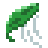

Hi, welcome to my website!!
I started this project to share some of my personal
interests while also improving my programming skills.
You'll find stuff about my life, hobbies and lots of recipes.
Hope you enjoy snooping through the pages ^^
(This is still a work in progress.)
I also want to thank my boyfriend for hosting my website for me
and helping me a ton to get it all working.
Check out his website here:
To start off - some short descriptions of what I post on here (And future plans):
After traveling a ton as a child and growing up in different countries with different cultures, I now really enjoy exploring new places. You'll find my most recent travel experiences on my Travel page!
Since I'm extremely passionate about food and baking, you will find a lot about my food experiments (sourdough!) and some cool recipes I like to make on repeat! I also plan on creating a Food Review page to either give my personal opinion on places or on specific foods.
As mentioned, this is a work in progress, so there isn't as much on here as I wish yet. But for the future, I'd like to include a small art/creativity gallery of my past projects, some book reviews, and maybe a page where I can ramble on about some topics I'm currently interested in.

If you're wondering why I chose a leaf as my web icon:
I wanted the icon to represent me in a way.
The first things that came to my mind were things I liked (favorite fruit, flower and color).
But none of that had any deeper meaning.
So, after thinking a bit, I finally decided on the leaf.
Always on the move, without an end destination - just
letting the flow of the wind guide its way. I think in my case the wind is just
life itself. I can't change its flow but I can embrace it, see where it takes me next,
and enjoy myself on the way.
(and perhaps you already noticed, green also happens to be my favorite color)